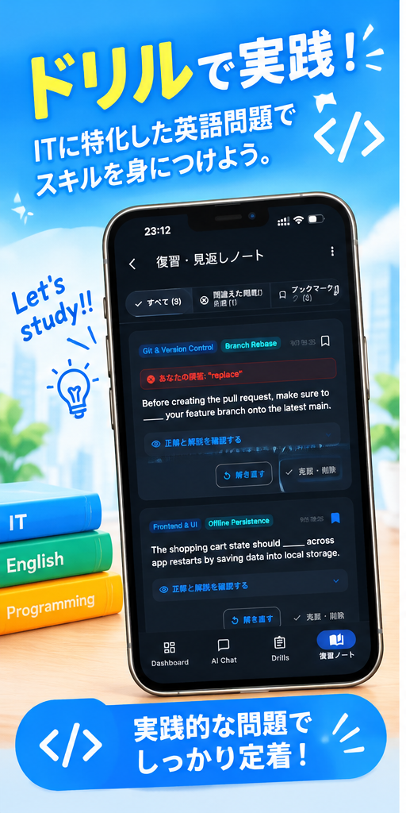

</> 実践的な問題でしっかり定着！
ドリルで実践！
ドリルで実践！
ITに特化した英語問題でスキルを身につけよう
ブランチ運用、プルリクエスト、状態管理など現場英文が満載。
「Before creating the pull request, make sure to _____ your feature branch onto the latest main. (rebase)」のように、 実際のチーム開発やコードレビューで日常的に使われるフレーズを4択形式で演習。意味だけでなく技術的な正解判断力も同時に身につきます。
-
実践的な4択問題： 現場のコミットメッセージ、ドキュメント、Issuesから厳選。
-
詳しい解説と和訳： なぜその単語が現場で選ばれるのかのニュアンスまで解説。
-
カテゴリー別学習： Programming, Cloud, Database, Securityごとに集中攻略。
